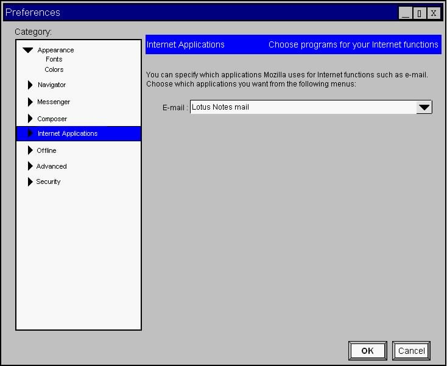
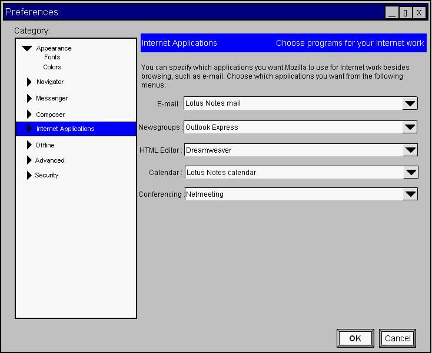

Modern browsers provide three common ways to access email:
Traditionally these have been handled by a built in mail client. Netscape Navigator 4.04 did allow users to use another mail client but required the user to edit the pref.js. Also the mail client was required to implement their Third-Party Mail and News API. This design will allow runtime selection of any mail clients and utilize existing mail client API's. Selection of a mail client will be done via a preference panel which presents a list of all available mail clients. On a Windows system, to be included in this list a mail client program must have set the appropriate keys in the Windows system registry, support MAPI, and provide a command to open to its default view. If the mail client does not support mailto protocol handling we will use the most recently selected client which does provide support.
This design describes how the current mail command handlers will be changed to access the "selected" mail client, how user's will select the desired mail program, how existing clients will be discovered and used on Windows, and how mail clients on other platforms may be made available to Mozilla.
The primary functional objective for this component is to provide a cross platform selectable mail framework. A secondary consideration is to make the framework easily extensible to other applications (news, calendar, address book, etc.)
As noted in the introduction there are three well known ways that users access mail from browsers. Our framework will define interfaces for those access methods and provide a means for the discovery of available mail programs which support those access methods. Since many mail clients are already supported on Windows this framework must be compatible with those clients. Also it should be easily extended to support existing frameworks on other platforms.
We will create XPCOM interfaces for each of the mail access methods. Further we will define an interface which allows the listing of available mail clients and the selection of one of those clients. Thus an implementer of these interfaces may support multiple mail programs.
After some discussion in the XPCOM newsgroup it appear that the preferred way to handle selection is the use of component categories. As Don Box describes in "Essential COM",
We will define a category for each interface and define a default key for each. All browser mail access command handlers will be rewritten to request the "default" implementation from category manager. The user may change the "default" during runtime using a preference panel.
The main data structure utilized by this component is the Mozilla component registry. This provides the mapping of interface to implementation within the XPCOM framework. According to XPCOM Dynamic Component Registration written by Suresh Duddi, XPCOM defines three types of component registries:
The different component registries will be searched in the following order:
The user component registry is the only one that will be updated on the fly by XPCOM. This will be used to store the user selection. Unfortunately, user component registries have not yet been implemented. If this work is not complete prior to implementing this design, the user prefs file may be used to store selections and setup the App component registry during browser startup.
This section describes the normal process of mail client selection and runtime access to the selected client. The description assumes a Win32 system but then describes how this can be extended to other platforms.
The browser defines several GUI elements which open the mail client to a specific view or using the current web page. Currently, there are two distinct ways that the current command handlers access the mail/news client. The following JavaScript functions are for the File->Send Link menu item and the File->New->Message menu item respectively.
function BrowserSendLink(pageUrl, pageTitle)
{
window.openDialog( "chrome://messengercompose/content/", "_blank",
"chrome,all,dialog=no",
"body='" + pageUrl + "',subject='" + pageTitle + "',bodyislink=true");
}
function goOpenNewMessage()
{
var msgComposeService = Components.classes["component://netscape/messengercompose"].getService();
msgComposeService = msgComposeService.QueryInterface(Components.interfaces.nsIMsgComposeService);
msgComposeService.OpenComposeWindow( null,
null,
Components.interfaces.nsIMsgCompType.New,
Components.interfaces.nsIMsgCompFormat.Default,
null);
}
BrowserSendLink() opens a dialog by type which implicitly assumes that a new Mozilla dialog is needed and that the mail/news client will use that dialog. The second is closer to the approach we will use, goOpenNewMessage() requests a service by ProgID "component://netscape/messengercompose". Then it gets the nsIMsgComposeService interface on that component to call OpenComposeWindow with the desired parameters.
Instead of using a set ProgID, the currently selected mail client will be requested from the category manager. The semantics of using category manager are to simply supply the desired category and a string key. The return is another string which represents a ProgID. For the call above we will request the "default" key value from the MailClientCompose category.
If the Mozilla mail/news client is installed then it will be defined as the default implementation of each mail access interface. When the user opens the "Internet Applications" preference pane, the mail program list will be populated using each registered implementation of nsIMailClientService. This essentially defines two functions, the first returns a list of mail client names and the second sets the current mail client using a name from the previous return list. Implementations of nsIMailClientService must be in the form a DLL implementing NSRegisterSelf() which is placed in the <exe-dir>/components directory. This allows the implementation to be detected by the browser during autodetection.
This structure allows us to create an implementation of nsIMailClientService which can support existing platform API's. On Windows the implementation would read the mail client system registry values to list mail client programs. If the user selects one of the programs it found in the system registry, it will then retrieve the values for each of the mail access commands. The preference panel code will be responsible for verifying that each mail interface is supported by the selected client, this can be done either by providing query functions in the nsIMailClientService interface or accessing each mail access interface after setting a new client.
The implementation of nsIMailClientService and the mail access interfaces can be extended to utilize exiting API's on other platforms by enclosing all platform specific code within #ifdef <platform> blocks. Alternately, mail client developers could create their own implementation of these interfaces. As long as the DLL is placed in the components directory and exports NSRegisterSelf(), the mail client will appear in the list of selectable programs.
Mozilla will allow user customizations through a Preferences pane shown below. On a Win32 system the list is populated from the windows registry, specifically the default value of each subkey below HKEY_LOCAL_MACHINE\SOFTWARE\Clients\Mail. Also the list will include Mozilla's mail client "Messenger" if installed. The selected mail client is applied as soon as the user selects Apply or OK (no restart of the browser is required).
The selected program is then used for all mail access commands. Mozilla currently supplies the following UI elements to access mail functionality.
| Mail Function | Mozilla |
| Create a new mail message | Menu Item: File->New->Message
Toolbar Button: (Pen) |
| Send current page | Menu Item: File->Send Page |
| Send link to current page | Menu Item: File->Send Link |
| Open mail client to default view (Inbox) | Menu Item: Tasks->Mail
Toolbar Button: (Letter) |
The following image shows our proposed changes and additions to the Mozilla preferences dialog. This shows the Preferences dialog with the "Mail and news" category renamed to Composer, since the setting are specific to that mail client. Also shown is the addition of an "Internet Applications" category.

This could be extended to include other application categories as shown here

We will also need an error dialog to display if the user selects a mail client which does not support mailto. This dialog will allow the user to choose whether another program should be used for this function. The dialog will also allow the user to choose not to have the message displayed in future attempts to use mailto URLs.
This project is defining a new API within Mozilla. This API allows us to create implementations which utilize existing platform API's such as the Win32 Mail Client API. It can also be easily extended to utilize other API's.
The API identifies three distinct ways of accessing mail client functionality. These correspond to the three user activities:
In order to support all three types of access the client program must define the following registry keys:
(HKLM = HKEY_LOCAL_MACHINE)
| Key | Value |
| HKLM\SOFTWARE\Clients\Mail Specifies the name of the subkey where information about the default mail client can be found. The root key of the information for this client can be found by appending this string to HKLM\Software\Clients\Mail | (default) |
| HKLM\SOFTWARE\Clients\Mail\clientname
Specifies the friendly name for this client. The list of clients in the Internet Options dialog box is generated by enumerating all the client subkeys and appending the friendly name for each to the list. |
(default) |
| HKLM\SOFTWARE\Clients\Mail\clientname
Contains the path to the .dll or .exe file to be used for simple MAPI calls. If this key is present and the mail client is the default, this .dll/.exe will be used. If the key is not present, the .dll/.exe associated with the CMCDLLName32 name/value pair in the [Mail] section of the Win.ini file will be used. If the Win.ini entry is not present, Mapi32.dll will be used. |
DLLPath |
| HKLM\SOFTWARE\Clients\Mail\clientname
\Protocols\mailto
Contains a mirror of the registry settings that the application needs to have written under HKEY_CLASSES_ROOT\mailto to service URLs that use the mailto protocol. This entire registry hierarchy replaces the existing mailto: registry hierarchy. |
(various) |
| HKLM\SOFTWARE\Clients\Mail\clientname
\shell\open\command
Contains the command line that will launch the mail client into its default view (typically the Inbox). |
(default) |
By separating these into distinct command paths we are able to use mail clients which do not support all three. For example if the user selects a mail client that does not support mailto URL's or MAPI calls (for new message creation), they could still access their inbox from the user interface. The calls which are not supported by the selected mail client are handled by the default mail client.
To provide the same functionality in Mozilla we will define the following four XPCOM interfaces:
The first three are simple wrappers for the commands currently found in the Windows registry. The third essentially provides a platform independent way to list available clients. We will provide a Windows implementation of these interfaces which uses the existing Windows system registry values. This implementation will also serve as an example for implementation of a similar scheme on other platforms.
To allow selection from multiple implementations of the previous mail client interfaces we use the concept of component categories. Each interface has a corresponding category as follows:
|
Category |
| nsIMailClientService | mailClient |
| nsIMailClientCompose | mailClient/compose |
| nsIMailClientInbox | mailClient/inbox |
| nsIMailtoHandler | mailClient/mailto |
The "mailClient" category will be used to enumerate all available implementations. The other three categories will be used to select an implementation and access the current implementation. Each of these mailClient/xxx categories will contain an entry called "default". Selection is accomplished by setting the value of this entry to the ProgID of the desired implementation.